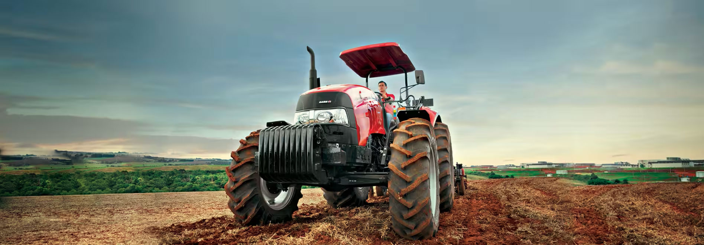
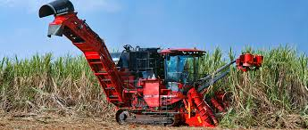
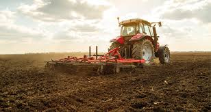

Sobre os Tratores
Os tratores são veículos essenciais para a agricultura moderna. Eles são usados para realizar uma variedade de tarefas no campo, como arar, semear e cultivar. Com diferentes tamanhos e potências, os tratores ajudam a aumentar a eficiência das operações agrícolas.
Galeria de Imagens



Contato
Para mais informações sobre tratores e suas aplicações no campo, entre em contato conosco através do e-mail: info@tratoresnocampo.com.